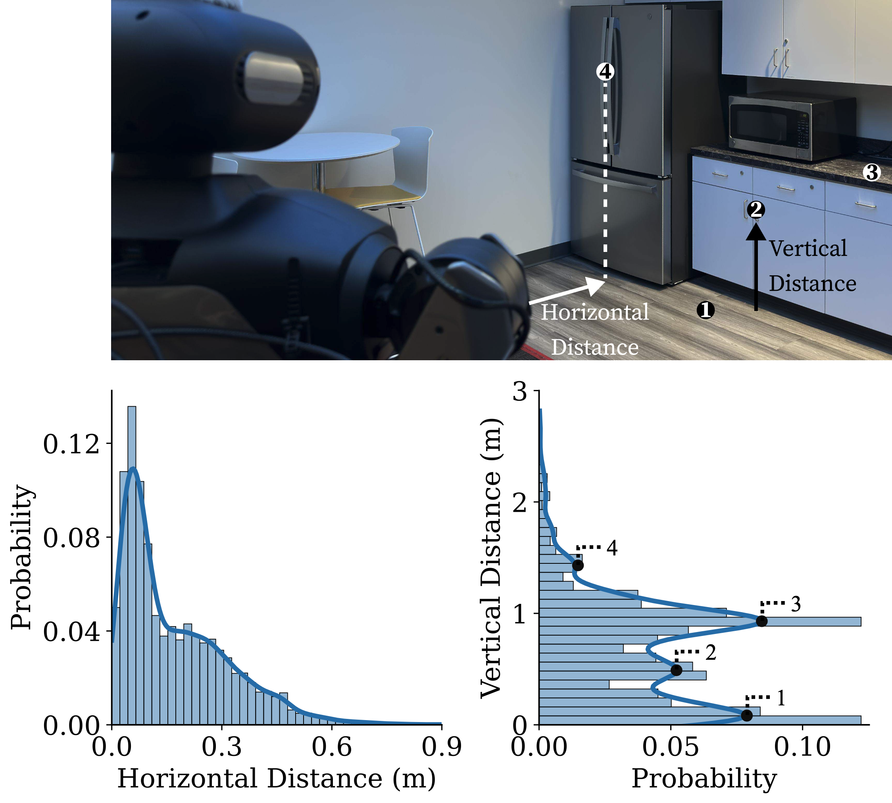
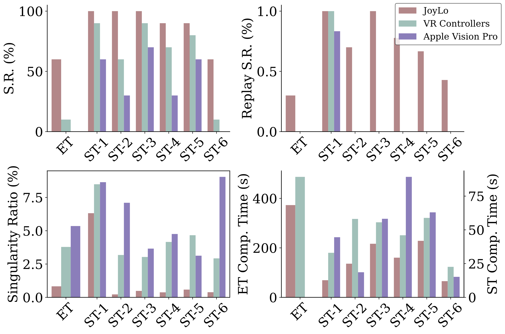
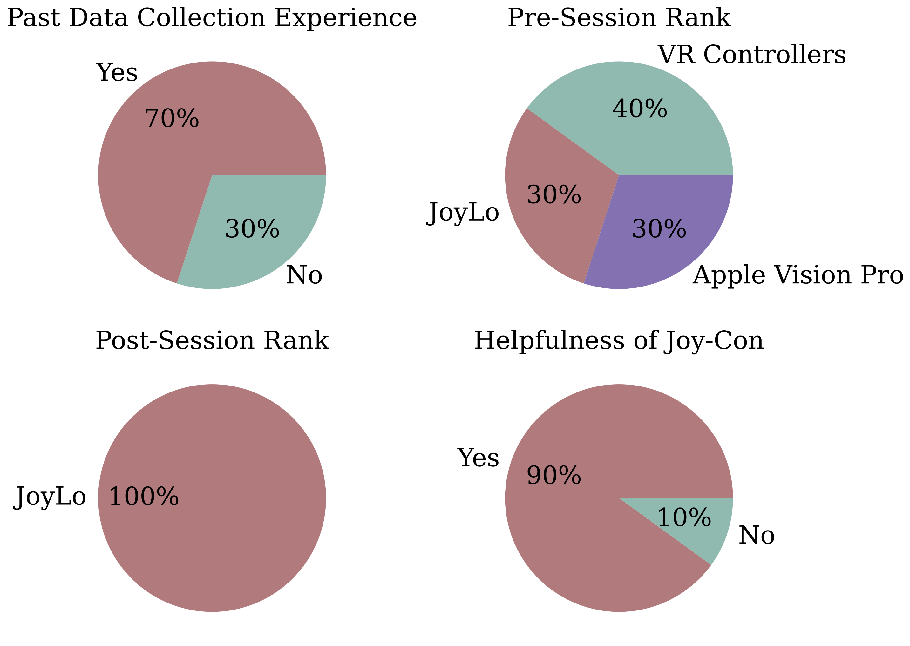
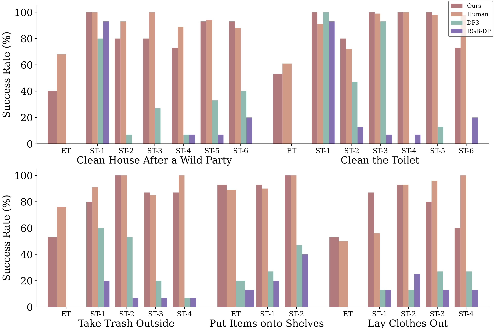
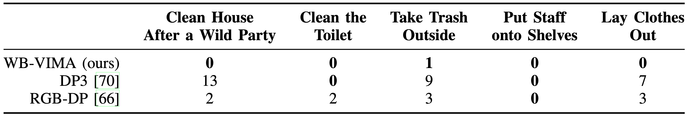
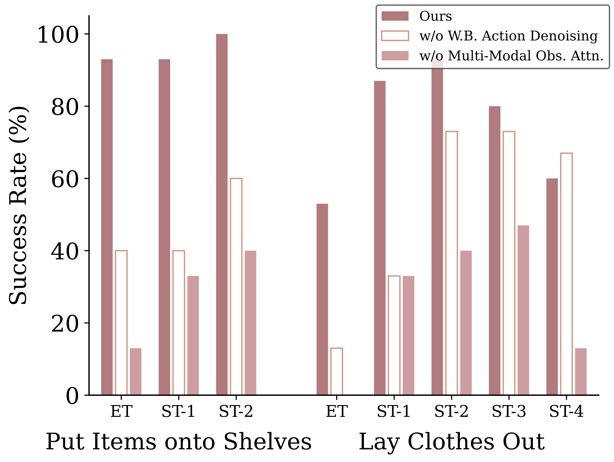
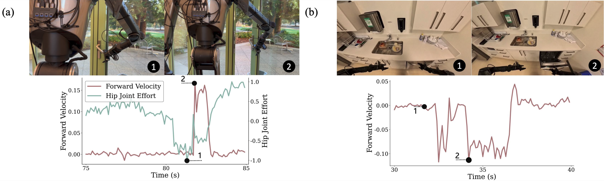

Real-world household tasks present significant challenges for mobile manipulation robots. An analysis of
existing robotics benchmarks reveals that successful task performance hinges on three key whole-body
control capabilities: bimanual coordination, stable and precise navigation, and extensive end-effector
reachability. Achieving these capabilities requires careful hardware design, but the resulting system
complexity further complicates visuomotor policy learning. To address these challenges, we introduce the
BEHAVIOR Robot Suite (BRS), a comprehensive framework for whole-body manipulation in diverse household
tasks. Built on a bimanual, wheeled robot with a 4-DoF torso, BRS integrates a cost-effective whole-body
teleoperation interface for data collection and a novel algorithm for learning whole-body visuomotor
policies. We evaluate BRS on five challenging household tasks that not only emphasize the three core
capabilities but also introduce additional complexities, such as long-range navigation, interaction with
articulated and deformable objects, and manipulation in confined spaces. We believe that BRS’s
integrated robotic embodiment, data collection interface, and learning framework mark a significant step
toward enabling real-world whole-body manipulation for everyday household tasks.
Core Capabilities for Daily Household Activities
What key capabilities must a robot possess to effectively perform daily household tasks?
To explore this question, we analyze activities from BEHAVIOR-1K.
Through the analysis,
we identify three essential whole-body control capabilities for successfully performing these tasks: bimanual
coordination, stable and accurate navigation, and
extensive end-effector reachability.
Tasks such as lifting large, heavy objects require bimanual manipulation, while retrieving tools throughout a
house depends on stable and precise navigation. Complex
tasks, such as opening a door while carrying groceries, demand the coordination of both capabilities. In
addition, everyday objects are distributed across diverse locations and heights, requiring robots to adapt their
reach accordingly.

Ecological distributions of task-relevant objects involved in daily household activities.Left:
The horizontal distance distribution follows a long-tail distribution. Right: The vertical
distance distribution exhibits multiple distinct modes, located at 1.43 m, 0.94 m, 0.49 m, and 0.09
m, representing heights at which household objects are typically found. Notably, the multi-modal
distribution of vertical distances highlights the necessity of extensive end-effector reachability,
enabling a robot to interact with objects across a wide range of spatial configurations.
Carefully designed robotic hardware that incorporates dual arms, a mobile base, and a flexible torso is
essential to
enable whole-body manipulation. However, such sophisticated designs introduce significant challenges for policy
learning methods, particularly in scaling data collection and accurately modeling coordinated whole-body actions
in
complex real-world environments. To address these challenges, we introduce the BEHAVIOR Robot Suite (BRS), a comprehensive framework for
learning whole-body manipulation to tackle diverse real-world household tasks. BRS addresses both hardware and
learning challenges through two key innovations: JoyLo and WB-VIMA.
BRS hardware system overview.Left: The Galaxea
R1 robot used in BRS, a wheeled dual-arm manipulator with a flexible torso. Right: JoyLo,
a low-cost, whole-body teleoperation interface designed for general applicability.
JoyLo: Joy-Con on Low-Cost
Kinematic-Twin Arms
JoyLo for whole-body teleoperation and data collection.
To enable seamless control of mobile manipulators with a high number of DoFs and facilitate data collection for
downstream policy learning, we introduce JoyLo—a general framework for building a cost-effective whole-body
teleoperation interface. We implement JoyLo on the R1 robot with the following design objectives:
Efficient whole-body control to coordinate complex movements;
Whole-body control example: guitar playing (4×).
Whole-body control examples: opening the refrigerator and the dishwasher (2×).
Rich user feedback for intuitive teleoperation;
Bilateral teleoperation for haptic feedback.
Ensuring high-quality demonstrations for policy learning;

User study results with 10 participants. JoyLo is the most efficient interface and
produces the highest-quality data.
Low-cost implementation to enhance accessibility;
JoyLo costs less than $500. See the Bill of Materials (BoM) here and assembly instructions here!
A real-time, user-friendly controller for seamless operation.
WB-VIMA model architecture. WB-VIMA autoregressively denoises whole-body actions within the
embodiment space and dynamically aggregates multi-modal observations using self-attention. By
leveraging the hierarchical interdependencies within the robot’s embodiment and the rich information
provided by multi-modal sensory inputs, WB-VIMA enables effective whole-body policy learning.
WB-VIMA is an imitation learning algorithm designed to model whole-body actions by leveraging the robot’s
inherent kinematic hierarchy. A key insight behind WB-VIMA is that robot joints exhibit strong
interdependencies—small movements in upstream links (e.g., the torso) can lead to large displacements in
downstream links (e.g., the end-effectors). To ensure precise coordination across all joints, WB-VIMA conditions
action predictions for downstream components on those of upstream components, resulting in more synchronized
whole-body movements. Additionally, WB-VIMA dynamically aggregates multi-modal observations using
self-attention, allowing it to learn expressive policies while mitigating overfitting to proprioceptive inputs.
Experiments
We conduct experiments to address the following research questions.
Research Questions
Q1: What types of household tasks are enabled by BRS?
Q2: How does JoyLo compare to other interfaces in terms of data collection efficiency, suitability
for policy learning, and user experience?
Q3: Does WB-VIMA outperform baseline methods? If so, why do baseline methods fail?
Q4: What components contribute to WB-VIMA’s effectiveness?
Q5: What additional insights can be drawn about the system’s overall capabilities?
Inspired by the everyday activities defined in BEHAVIOR-1K,
we select five representative household tasks to demonstrate BRS’s capabilities. These tasks require the three
critical whole-body control capabilities: bimanual coordination, stable and accurate navigation, and extensive end-effector reachability. All tasks are conducted in real-world, unmodified environments
with objects that humans interact with daily. These tasks are long-horizon, ranging from 60s to 210s for a human operator to complete
using JoyLo. Due to the multi-stage nature of these activities, each task is segmented into multiple sub-tasks (“ST”).
BRS Enables Various Household Activities (Q1)
Task 1: Take Trash Outside
The robot navigates to a trash bag in the living room, picks it up (ST-1),
carries it to a closed door (ST-2), opens the door (ST-3), moves outside, and deposits the trash bag into a trash bin (ST-4). Stable and accurate navigation
is the most critical capability for this task.
Autonomous policy rollouts for the task “take trash outside”.
Task 2: Put Items onto Shelves
In a storage room, the robot lifts a box from the ground (ST-1), moves to
a four-level shelf, and places the box on the appropriate level based on available space (ST-2). Extensive end-effector reachability is the most critical capability for this task.
Autonomous policy rollouts for the task “put items onto shelves”.
Task 3: Lay Clothes Out
In a bedroom, the robot moves to a wardrobe, opens it (ST-1), picks up a
jacket on a hanger (ST-2), lays the jacket on a sofa bed (ST-3), and then returns to close the wardrobe (ST-4). Bimanual coordination is the most critical capability for
this task.
Autonomous policy rollouts for the task “lay clothes out”.
Task 4: Clean the Toilet
In a restroom, the robot picks up a sponge placed on a closed toilet (ST-1), opens the toilet cover (ST-2),
cleans the seat (ST-3), closes the cover (ST-4), and wipes it (ST-6). The
robot then moves to press the flush button (ST-6). Extensive end-effector
reachability is the most critical capability for this
task.
Autonomous policy rollouts for the task “clean the toilet”.
Task 5: Clean House After a Wild Party
Starting in the living room, the robot navigates to a dishwasher in the kitchen (ST-1) and opens it (ST-2). It then
moves to a gaming table (ST-3) to collect bowls (ST-4). Finally, the robot returns to the dishwasher (ST-5), places the bowls inside, and closes it (ST-6). Stable and accurate navigation
is the most critical capability for this task.
Autonomous policy rollouts for the task “clean house after a wild party”.
JoyLo Is an Efficient, User-Friendly Interface That Provides High-Quality Data for Policy Learning (Q2)
We conducted an extensive user study with 10 participants to evaluate JoyLo’s effectiveness and the suitability
of its collected data for policy learning. We compare JoyLo against two popular inverse kinematics (IK)-based
interfaces: VR controllers and Apple Vision Pro.
The study was conducted in the OmniGibson simulator using the “clean house after a wild party” task to prevent
potential damage to the robot or environment.
User study. From left to right: JoyLo, VR controllers, and Apple Vision Pro.
An example user study trajectory.
We measure success rate (↑, higher is better) and completion time (↓, lower is better) to
assess efficiency, and report metrics replay success rate (↑) and singularity ratio (↓) to
assess data quality for policy learning. Here, “success rate” refers to the proportion of successful
teleoperation trials, while “replay success rate” measures the success of open-loop execution of collected robot
trajectories. This is particularly challenging for long-horizon tasks in stochastic environments. Higher replay
success indicates verified data, allowing imitation learning policies to model collected trajectories without
accounting for embodiment or kinematic mismatches. We report results for both the entire task (“ET”) and individual subtasks (“ST”).
User study results with 10 participants.
As shown in the figure above, JoyLo achieves the highest success rate and shortest completion time among all
interfaces. The average success rate for completing the entire task using JoyLo is 5× higher than VR
controllers, while no participants complete the entire task using Apple Vision Pro. The median completion time
using JoyLo is 23% shorter than with VR controllers.
JoyLo particularly excels in articulated object manipulation where precise manipulation is crucial.
Furthermore, JoyLo consistently provides the highest-quality data, as indicated by the fact that only data
collected
with JoyLo successfully replayed in open-loop to complete
non-trivial tasks. This is because JoyLo results in the lowest
singularity ratio, 78% lower than VR controllers and 85%
lower than Apple Vision Pro.

User study participant demographics and survey results.
All participants rate JoyLo as the most user-friendly interface. Interestingly, although 70% of participants
initially believed IK-based interfaces would be more intuitive,
after the study, they unanimously prefer JoyLo. This shift
highlights a key difference in data collection for tabletop
manipulation and for mobile whole-body manipulation—one
common participant complaint is the difficulty of effectively
controlling the mobile base and torso using IK-based methods.
WB-VIMA Consistently Outperforms Baseline Methods for Household Activities (Q3)
For baseline comparisons, we include DP3 and the RGB image-based
diffusion policy (“RGBDP”). We also report human teleoperation success
rate as a reference and track safety violations, defined as robot collisions or motor power losses due to
excessive force. Each activity is evaluated 15 times per policy. During evaluation, if a sub-task (“ST”) fails, we reset the robot and environment to the initial state of the
subsequent sub-task and continue evaluation. Additionally, we report the success rate for the entire task
(“ET”)—representing the policy’s capability to complete the activity
end-to-end.

Success rate for five representative household activities. “ET” denotes the entire task and
“ST” denotes sub-task.

Safety violations during evaluation. WB-VIMA exhibits minimal collisions with environmental
objects and rarely causes motor power loss due to excessive force.
As shown in the figure above, WB-VIMA consistently outperforms the baseline methods DP3 and RGB-DP across all
tasks. In terms of end-to-end task success rate, WB-VIMA achieves 13× higher success than DP3 and 21× higher
success than RGB-DP. The baseline methods can complete only certain sub-tasks and the relatively simpler “put
items onto shelves” task but fail on more complex tasks. For average sub-task performance, WB-VIMA performs 1.6×
better than DP3 and 3.4× better than RGB-DP.
The baseline methods fail due to their inability to predict accurate and coordinated whole-body actions. Both
DP3 and RGB-DP directly predict flattened 21-DoF actions, ignoring the hierarchical dependencies within the
action space. This is problematic because even well-trained policies exhibit modeling errors. If such errors
occur in the predicted mobile base or torso actions, they cannot be corrected by arms actions, as all components
are predicted simultaneously without interdependency. Whole-body control involves multiple articulated
components, meaning inaccurate whole-body actions amplify end-effector drift in the task space, push the robot
into out-of-distribution states, and eventually lead to manipulation failures. We show several baseline methods'
failure cases in the videos below.
Failure cases of baseline methods.
Effects of WB-VIMA’s Components on Task Performance (Q4)
We conduct ablation studies with two WB-VIMA variants: one without autoregressive whole-body action denoising
and the other without multi-modal observation attention.

Ablation study results for tasks “put items onto shelves” and “lay clothes out”.
As shown in the figure above, removing either component significantly degrades overall performance. For the task
“put items onto shelves” and the first sub-task “open wardrobe” in “lay clothes out”, coordinated whole-body
actions are critical for success. Consequently, removing autoregressive whole-body action denoising results in a
drastic performance drop of up to 53%. Removing multi-modal observation attention reduces performance across all
tasks. In summary, the synergy between coherent, coordinated whole-body action predictions and the effective
extraction of task-conditioning features from multi-modal observations is essential for WB-VIMA’s strong
performance in complex, real-world household tasks.
Insights into the Capabilities of the Whole System (Q5)
While BRS demonstrates strong performance across diverse household tasks, what additional insights can inform
future advances? We highlight two key findings. First, the 4-DoF torso and mobile base greatly enhance the
maneuverability that stationary arms do not easily possess. As shown in the figure and videos below, this is
evident in tasks involving articulated object interactions where coordinated whole-body movements are necessary,
such as “opening the door” in “take trash outside”, and “opening the dishwasher” in “clean house after a wild
party”. To open an unmodified door, the robot learns to bend its torso forward while advancing the mobile base,
generating enough inertia to unlock the hinge and push the door open after grasping the handle. Similarly, when
opening a dishwasher, the robot moves its base backward, using its entire body to pull the dishwasher door open
smoothly.

Emergent behaviors of learned WB-VIMA policies. The trained policies leverage the torso and
mobile base to improve maneuverability.
Additionally, we observe that the robot learns to recover from failures. As shown in videos below, when the
robot was opening the wardrobe door, one door was not fully opened. The robot then moves
backward a bit, attempts to open the door again, and successfully opens it.
Similarly, when robot fails to close the toilet cover due to the limited arm reach, it tilts its torso forward,
bringing its
arms closer to the toilet. The robot then retries, grasps the toilet cover successfully, and closes the lid
smoothly.
Emergent behaviors of failure recovery.
Failure Cases
We show several failure cases of learned WB-VIMA policies. They include 1) failure to fully open the dishwasher
despite that the robot has grasped the handle; 2) failure to press the flush button; 3) failure to pick up the
trash bag from the floor; 4) failure to lift the box on the floor; and 5) failure to close the wardrobe door.
Several failure cases of learned WB-VIMA policies.
Conclusion
We present BRS, a holistic framework for learning whole-body manipulation to tackle diverse real-world household
tasks. We identify three core whole-body control capabilities essential for performing household activities:
bimanual coordination, stable and precise navigation, and
extensive end-effector reachability. Successfully
enabling robots to achieve these capabilities with learning-based approaches requires overcoming challenges in
both data collection and modeling algorithms. BRS addresses these challenges through two key innovations: 1)
JoyLo, a cost-effective whole-body teleoperation interface that enables efficient data collection for
learning-based methods; 2) WB-VIMA, a novel algorithm that leverages the robot’s embodiment hierarchy and
explicitly models the interdependencies within whole-body actions. The overall BRS system demonstrates strong
performance across a range of real-world household tasks, interacting with unmodified objects in natural,
unstructured environments. We believe BRS represents a significant step toward enabling robots to perform
everyday household tasks with greater autonomy and reliability.
Acknowledgement
We thank Chengshu (Eric) Li, Wenlong Huang, Mengdi Xu, Ajay Mandlekar, Haoyu Xiong, Haochen Shi, Jingyun Yang,
Toru Lin, Jim Fan, and the SVL PAIR group for their invaluable technical discussions. We also thank Tianwei Li
and the development team at Galaxea.ai for timely hardware support, Yingke Wang for helping with the figures,
Wensi Ai and Yihe Tang for helping with the video filming, Helen Roman for processing hardware purchase, Frank
Yang, Yihe Tang, Yushan Sun, Chengshu (Eric) Li, Zhenyu Zhang, Haoyu Xiong for participating in user studies,
and the Stanford Gates Building community for their patience and support during real-robot experiments. This
work is in part supported by the Stanford Institute for Human-Centered AI (HAI), the Schmidt Futures Senior
Fellows grant, NSF CCRI #2120095, ONR MURI N00014-21-1-2801, ONR MURI N00014-22-1-2740, and ONR MURI
N00014-24-1-2748.
BibTeX
@article{jiang2025brs,
title = {BEHAVIOR Robot Suite: Streamlining Real-World Whole-Body Manipulation for Everyday Household
Activities},
author = {Yunfan Jiang and Ruohan Zhang and Josiah Wong and Chen Wang and Yanjie Ze and Hang Yin and Cem Gokmen
and Shuran Song and Jiajun Wu and Li Fei-Fei},
year = {2025},
journal = {arXiv preprint arXiv: 2503.05652}
}